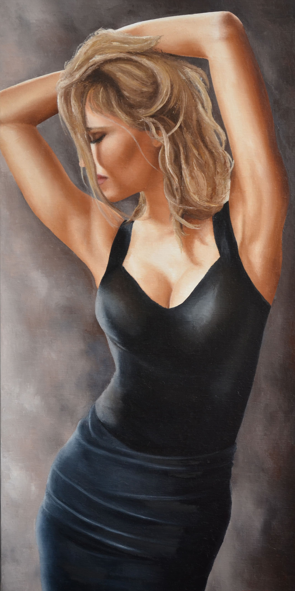

Féminitude
Ainsi De Suite 3
- Technique
- Huile sur Toile
- Dimensions
- 50 × 100 cm
- Année
- 2018
- Disponibilité
- Disponible
« Ainsi De Suite 3 » est une œuvre d’Annick Bouvattier, réalisée en 2018 (huile sur toile, 50 × 100 cm). Elle fait partie de la collection « Féminitude ». Cette œuvre est disponible.
“Ainsi De Suite 3” is a work by Annick Bouvattier, created in 2018 (oil on canvas, 50 × 100 cm). It belongs to the “Femininity” collection. This work is available.
«Ainsi De Suite 3» es una obra de Annick Bouvattier, realizada en 2018 (óleo sobre lienzo, 50 × 100 cm). Forma parte de la colección «Feminidad». Esta obra está disponible.
«Ainsi De Suite 3» è un'opera di Annick Bouvattier, realizzata nel 2018 (olio su tela, 50 × 100 cm). Fa parte della collezione «Femminilità». Quest'opera è disponibile.
Demander des informations